Traverse Wildness
Story
Game
Arts
Documants
[Documents]
Hi!These are records of problems I met and my solutions while learning and working
the contents are on updating...
CONTENT
[Unity Shader] Create a disturtion transparent ball use URP shader code|EN
[Blender]Correct the color of grase pencil in blender|CN
视频演示
...
Quik Jump To:
HomePage
Back To Top
Author[github]
